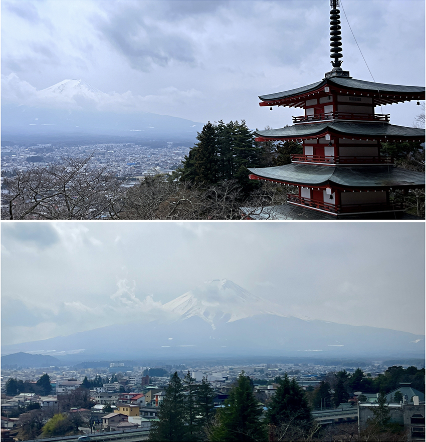
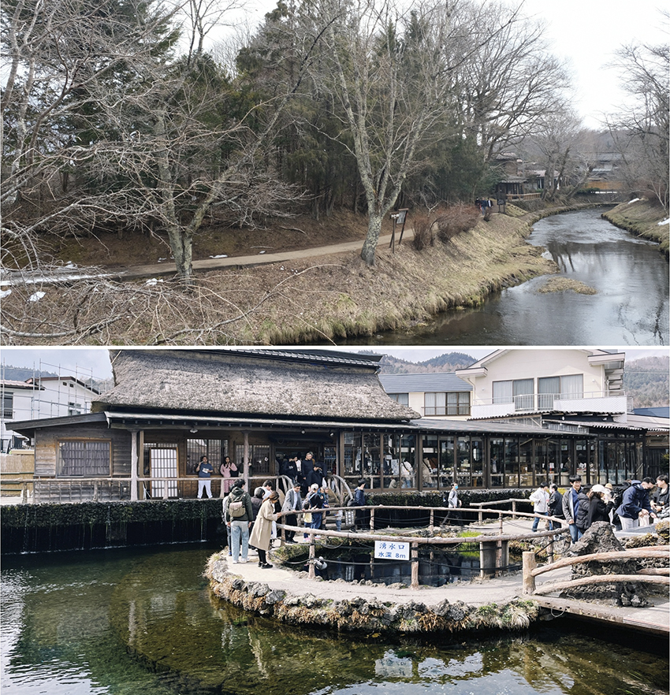
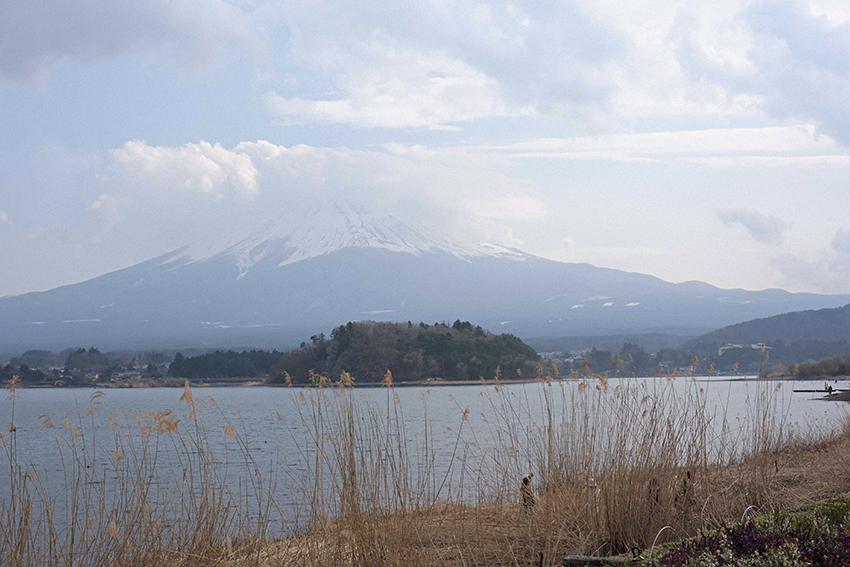
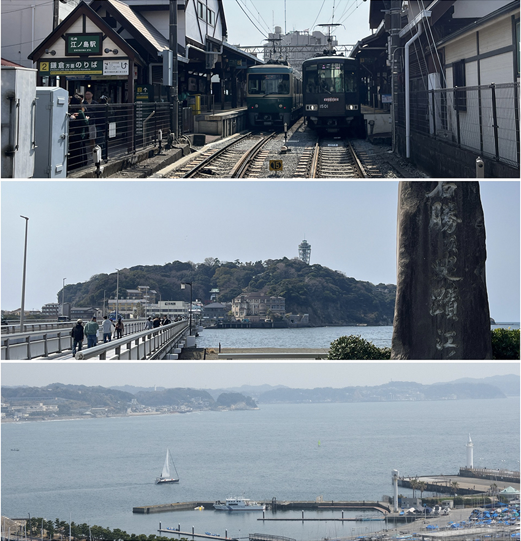
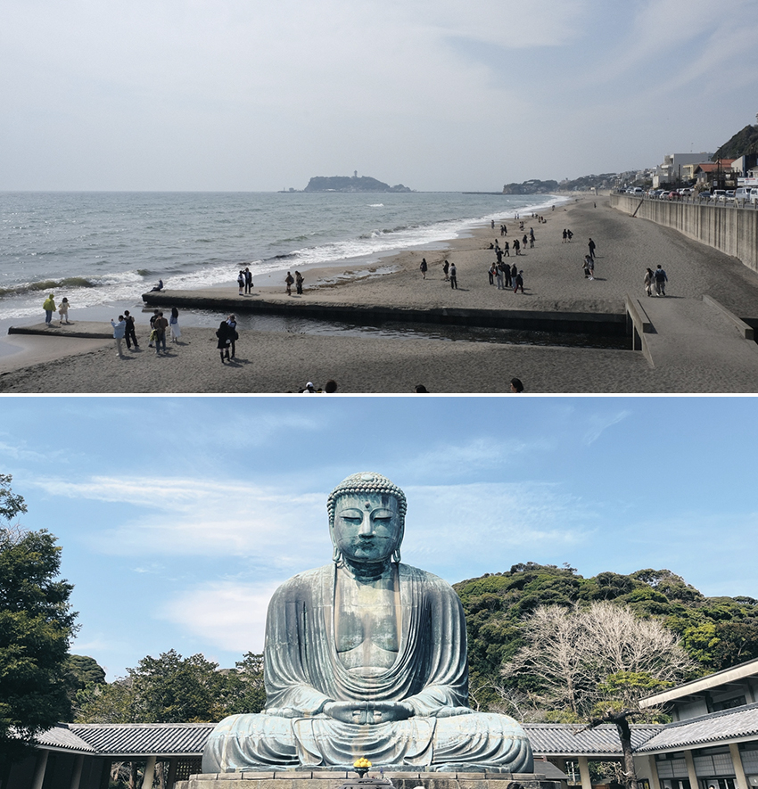
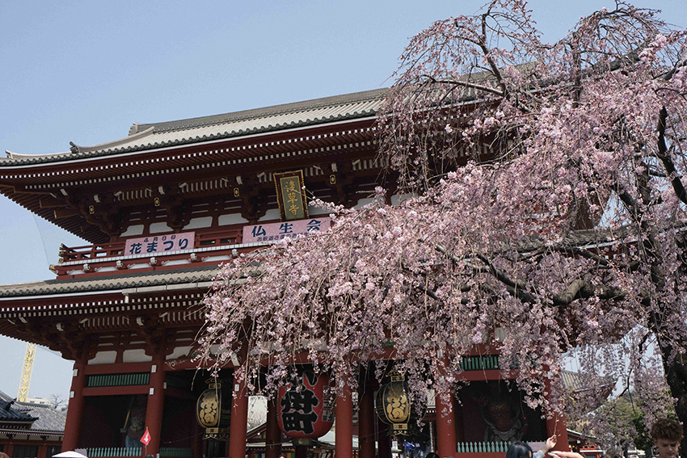
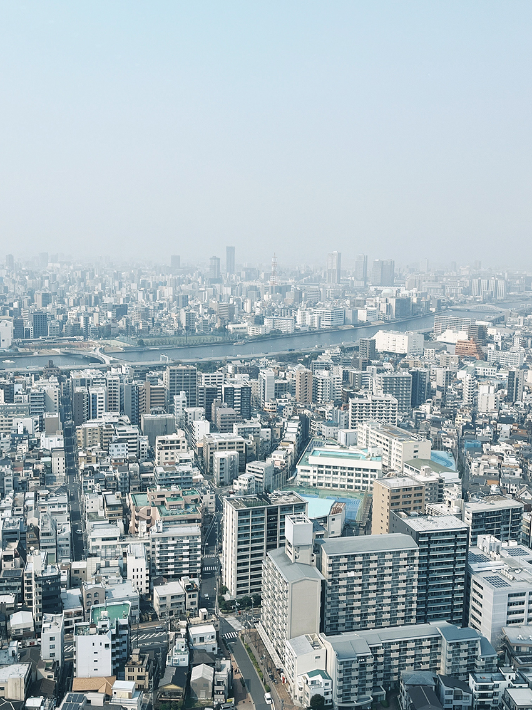
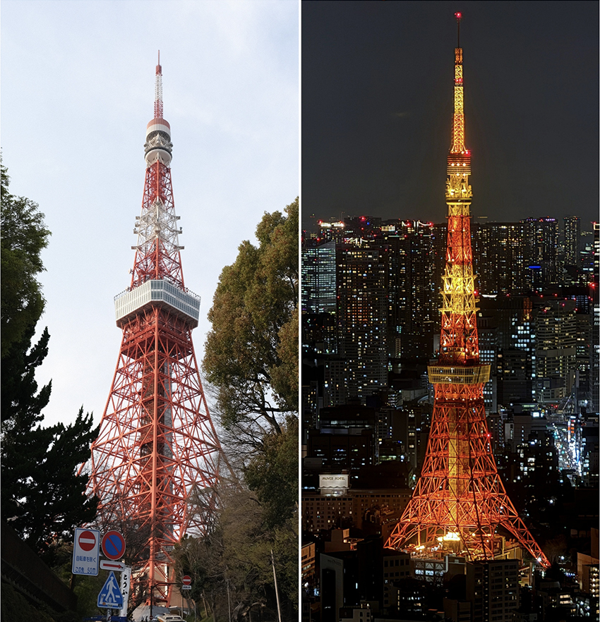

去過日本幾次，但還沒去過東京！因為很想去看看富士山，因此安排了兩天的近郊，剩餘時間才回到市區逛逛。這趟日本之旅的第一站就是能看見富士山的山梨縣河口湖。富士山附近的交通沒有地鐵，景點間通常是靠公車或自駕移動。考量到交通，我預定了旅遊平台的一日行程券，有導遊與巴士帶領行程，讓旅程輕鬆不少。印象最深刻的是新倉山淺間神社，需要爬上一些階梯才能到五重塔，而塔與富士山相映的畫面大家一定都看過！但當天剛好有點多雲，富士山部分被雲遮住，但偶爾也會探出頭來。山頂部分還有積雪，但背景也是白色的，所以只能隱約看到山影浮現，但仍能感受到富士山的壯麗與魅力。
|  |
| 天氣多雲，但還是能微微看見富士山與山頂白雪。 |
第二個景點是忍野八海，這裡是由富士山雪水融化形成的八個清澈水池。一定要試試這裡的富士山融化雪水，只要帶自己的水杯到水池旁的飲水處，就能免費喝到。如果忘記帶水杯（或是跟我一樣把水杯弄丟了），旁邊商店也有賣一個200日圓的大容器來裝。另外，草餅也值得一試，吃起來很像有加紅豆餡的草仔粿，現烤的餅溫熱軟糯。但我反而更喜歡村莊外的景色，能看到清澈的河水流動，一旁還有積雪，枯枝與矮房合在一起的色調與氛圍讓人覺得很舒服。
|  |
| 日本的河或小溪，總是清澈得讓人覺得不可思議。 |
最後的河口湖大石公園，則是能看到湖景與富士山相輝映，不同季節會有不同植物盛放（三月底的植物是波波草，一坨一坨的紫色小圓球樣貌，我覺得醜得很可愛 XD）。另一特點是富士山的倒影會映在湖水上，但因為天氣不太好，沒有看到。整個一日券還包含了一些網紅景點，像是富士山 x LAWSON與日川時計店等，但我覺得相對普通，而且人潮擁擠。如果不是一定要打卡，我覺得可以安排其他地點。
|  |
| 大湖公園望過去的富士山，天氣好時還能看到山倒映在湖上。 |
第二天來到鎌倉，東京知名的近郊景點，也是《灌籃高手》平交道的名場景。我們從東京先搭JR到藤澤站，然後轉乘不同的交通系統——江之電，購買江之電的一日票（800日圓），當日內可無限搭乘。只要搭超過四次就回本囉（因為西瓜卡或IC卡刷一次就約200多日圓）。今天天氣相當好，我們在江之島站下車，沿著長道搭配海景走入江之島。島本身不大，但有一條小商店街可以逛逛，一路向上走（或花錢搭手扶梯），上方有江島神社可以參拜，從島上俯瞰海景也很漂亮！
|  |
| 搭乘江之電能夠往返藤澤與鎌倉，前往江之島還能看到漂亮海景。 |
下山後回車站搭乘江之電再到鎌倉高校前，這裡就是《灌籃高手》的平交道啦，我……不推，人真的太多啦！而且大家會一直往平交道擠，電車經過時，照片裡滿滿都是路人甲。反而另一站七里濱相對來說舒適多了，能夠走在沙灘上，仰望天空，還有很多老鷹在空中盤旋，海景搭配遠方的江之島，非常舒服。
接著前往鎌倉大佛，高 11.3 公尺，重達 121 噸的青銅佛像靜靜端坐於戶外，上面斑駁的歷史痕跡，給人莊重寧靜之感。回到鎌倉車站，旁邊的小町通商店街也別忘了去逛逛，裡面有很多特色小吃，也有許多伴手禮店可購買。
|  |
| 夏天的鎌倉據說是衝浪勝地；鎌倉大佛身上能看到歷史斑駁痕跡。 |
第三天後的行程就都在東京了，因為想體驗和服，所以提前在旅遊平台購買了票券，和服穿起來我覺得不太舒適，因為腰帶會一直束著腰，搭配傳統的木屐，每次只能走一小步，但穿著和服走在商店街與雷門，彷彿穿越到江戶時代。走入淺草寺後，也發現寺前的櫻花樹開了，充滿日本春天的氛圍！
|  |
| 淺草寺前的櫻花開了，很多人要跟它拍照。 |
中午來到晴空塔，我沒上觀景台，但午餐餐廳位在晴空塔30樓，因此吃飯時就能同時由高處觀望整個東京市容。沒有頂樓加蓋的房子，整齊街道與高樓大廈、河道交錯的現代都市景觀。雖然怕高，但還是忍不住將美景盡收眼底，整個晴空塔也與我想像的不一樣，不單單是一座塔，而是結合了超市、品牌專賣店的綜合商場，完全可以花上半天以上在裡面購物。
|  |
| 從晴空塔30F望下俯瞰的東京市區。 |
傍晚來到芝公園附近，準備遠眺作為日劇與東京建築象徵的「東京鐵塔」。過去只能在影像或影劇中見到的建築，如今就這樣矗立在眼前，實在讓人感動。塔身醒目的橘色與周遭灰白色建築或藍白天空相映，讓人直覺聯想到「東京鐵塔就是主角」。夜晚則前往東京最美的夜景之一——森美術館，欣賞整座城市的燈火閃爍，感受不同氛圍的東京鐵塔。
|  |
| 下午與夜晚不同色調與感覺的東京鐵塔。 |
東京確實打破了我對都市的刻板印象，這裡真的太好買了，再加上日本的文化輸出，從Pokémon、任天堂到品牌店、各種文創小物，澀谷與新宿完全逛不完，甚至還有許多地點沒排進行程，但這也讓我更期待下次的東京之旅。這趟旅程，從富士山的寧靜，鎌倉的歷史，再到東京的繁華，每一站都帶來不同的感受與回憶。滿分10分，我給9.5分！（0.5分扣在住宿空間太小，雖然我知道那是我錢錢不夠的問題 XD）。